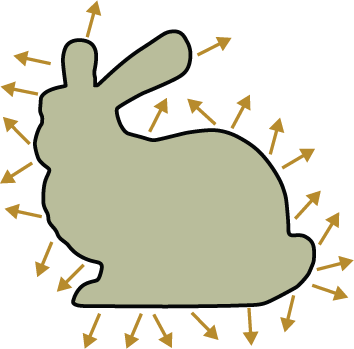

In this assignment, you will develop a rendering algorithm that combines several previously unused architectural components of Nori (Emitters, BSDFs) to compute the illumination integral discussed in class. We will only focus on direct illumination for now (i.e. light which has interacted with at most one material) and leave indirect illumination for the next assignment. In the second part of the assignment, you will also add a new BSDF model for refractive materials ("dielectrics").
As usual, begin by importing the latest base code updates into your repository by running
$ git pull upstream master
Our first goal will be to extend Nori so that any geometric object can be turned into a light source known as an area light.

Each triangle of a mesh that is marked as an area light uniformly emits radiance towards all directions above its surface. In Nori's XML description language, area lights are specified using a nested emitter tag of type area. Here is an example:
<scene>
<!-- Load a OBJ file named "bunny.obj" -->
<mesh type="obj">
<string name="filename" value="bunny.obj"/>
<!-- Turn the mesh into an area light source -->
<emitter type="area">
<!-- Assign a uniform radiance of 1 W/m2sr -->
<color name="radiance" value="1, 1, 1"/>
</emitter>
</mesh>
<!-- ..... -->
</scene>
Currently, Nori won't be able to understand the above snippet since area lights are not yet implemented. To add area lights to Nori, follow these steps:
The Monte Carlo rendering technique in part 2 of this assignment requires the ability to sample points that are uniformly distributed on area lights. Currently, none of this functionality exists.
Begin by familiarizing yourself with the Mesh class to see how
vertices, faces and normals are stored. Next, add a method that
uniformly samples positions on the surface associated with a
specific Mesh instance.
The name and precise interface of this method are completely up to you.
However, we suggest that it should take a uniformly 2D sample and return
You may find the DiscretePDF class useful to implement the sampling step. We suggest that you use this class to build a discrete probability distribution that will allow you to pick a triangle proportional to its surface area. Once a triangle is chosen, you can (uniformly) sample a barycentric coordinate \((\alpha, \beta, 1-\alpha-\beta)\) using the mapping
\[
\begin{pmatrix}
\alpha\\
\beta
\end{pmatrix}
\mapsto \begin{pmatrix}
1 - \sqrt{1 - \xi_1}\\
\xi_2\, \sqrt{1 - \xi_1}
\end{pmatrix}
\]
where \(\xi_1\) and \(\xi_2\) are uniform variates.
The precomputation to build the discrete probability distribution can be performed in the activate() method of the Mesh class, which is automatically invoked by the XML parser.
Take a look at the Emitter interface. It is almost completely empty. Clearly, some mechanism for sample generation, evaluation of probabilities, and for returning the emitted radiance is needed.
As before, we don't explicitly specify an API that you should use to implement the sampling and evaluation operations for emitters—finding suitable abstractions is part of the exercise. That said, you can look at the BSDF definitions in include/nori/bsdf.h to get a rough idea as to how one might get started with such an interface. Your design should be built around the functionality you need to implement the integrator in the next task.
Create a new class AreaLight in a file named src/area.cpp that derives from the Emitter class. Connect it to the scene parser using the NORI_* macros similar to the Integrators you have previously created. Use the constructor's const PropertyList & argument to extract the radiance parameter in the constructor.
Make sure to include a section in the report about your design of the two components above.
In this part you will implement a new direct illumination integrator, which integrates the incident radiance by sampling points on a set of emitters (a.k.a. light sources). Emitters can be fully, partially or not at all visible from a point in your scene, hence you will need to perform Monte Carlo integration to compute the reflected radiance while accounting for visibility.
Recall the Reflection Equation discussed in class, which expresses the reflected radiance due to incident illumination from all directions as an integral over the unit hemisphere centered at \(\mathbf{x}\): \[ \newcommand{\vx}{\mathbf{x}} \newcommand{\vc}{\mathbf{c}} \newcommand{\vy}{\mathbf{y}} \newcommand{\vn}{\mathbf{n}} L_r(\vx,\omega_r) = \int_{\mathcal{H}^2} f_r (\vx,\omega_i,\omega_r)\,L_i (\vx,\omega_i) \cos\theta_i\, \mathrm{d}\omega_i. \] We'll now put together all of the pieces to approximate this integral using Monte Carlo sampling.
Begin by taking a look at the
BSDF class in Nori, which is an abstract
interface for materials representing the \(f_r\) term in the above
equation. Evaluating \(f_r\) entails a call to the
BSDF::eval() function, while sampling and probability
evaluation are realized using the BSDF::sample() and
BSDF::pdf() methods. All methods take a special
BRDFQueryRecord as argument, which stores
relevant quantities in a convenient data structure.
Note that the BSDF of an intersection its can be obtained using the expression its.mesh->getBSDF().
In this assignment, we will only consider direct illumination, which means that \(L_i(\vx,\omega_i)\) is zero almost everywhere except for rays that happen to hit an area light source. A correct but naïve way of evaluating this integral would be to uniformly sample a direction on the hemisphere and then check if it leads to an intersection with a light source.
However, doing so would be extremely inefficient: light sources generally only occupy a tiny area on the hemisphere, hence most samples would be wasted, causing the algorithm to produce unusably noisy and unconverged images.
We will thus use a better strategy with a higher chance of success: instead of sampling directions on the hemisphere and checking if they hit a light source, we will directly sample points on the light sources and then check if they are visible as seen from \(\vx\). Conceptually, this means that we will integrate over the light source surfaces \(\mathcal{L}\) instead of the hemisphere \(\mathcal{H}^2\): \[ \newcommand{\vr}{\mathbf{r}} L_r(\vx,\omega_r) = \int_{\mathcal{L}} f_r (\vx,\vx\to\vy,\omega_r)\,L_e (\vy,\vy\to\vx) \, \mathrm{d} \vy?? \qquad(\text{warning: this is not (yet) correct}) \]
Here \(\mathbf{x}\to\mathbf{y}\) refers to the normalized direction from \(\mathbf{x}\) to \(\mathbf{y}\), and \(L_e(\vx,\omega)\) is the amount of emitted radiance at position \(\vx\) into direction \(\omega\). The integral above motivates the algorithm, but it is not correct: since we changed the integration variable from the solid angle domain to positions, there should be a matching change of variables factor that accounts for this (this is not unlike switching from polar coordinates to a Cartesian coordinate system). In our case, this change of variable factor is known as the geometric term: \[ G(\vx\leftrightarrow\vy) :=V(\vx\leftrightarrow\vy)\frac{ |\vn_\vx \cdot(\vx\to\vy)|\,\cdot\, |\vn_\vy \cdot(\vy\to\vx)|}{\|\vx-\vy\|^2} \]
The first term \(V(\vx\leftrightarrow\vy)\) is the visibility function, which is \(1\) or \(0\) if the two points are mutually visible or invisible, respectively. The numerator contains the absolute value of two dot products that correspond to the familiar cosine foreshortening factors at both \(\vx\) and \(\vy\). The denominator is the inverse square falloff that we already observed when rendering with point lights. The \("\leftrightarrow"\) notation expresses that the function is symmetric with respect to its arguments.
Given the geometric term, we can now write down the final form of the reflection equation defined as an integral over surfaces: \[ \newcommand{\vr}{\mathbf{r}} L_r(\vx,\omega_r) = \int_{\mathcal{L}} f_r (\vx,\vx\to\vy,\omega_r)\,G(\vx\leftrightarrow\vy)\,L_e (\vy,\vy\to\vx)\, \mathrm{d} \vy \] Note that the cosine factor in the original integral is absorbed by one of the dot products the geometric term. To implement distribution ray tracing in Nori, follow these steps:
src/whitted.cpp (the name will become clear later)Li() function. This part works just like in the simple.cpp integrator.
What this step does is to apply the ray tracing operator \(\vr(\vc, \omega_c)\) to convert reflected radiance at surfaces into incident radiance at the camera \(\vc\):
\[
L_i(\vc,\omega_c)= L_e(\vr(\vc, \omega_c), -\omega_c) + L_r(\vr(\vc, \omega_c), -\omega_c).
\]
Note that \(L_r\) is the quantity computed by the integral above and that we need an additional \(L_e\) term here to account for light sources that were direcly hit by the camera ray.
Given \(\vx\), the distribution ray tracer should then approximate the above integral by sampling a single position \(\vy\in\mathcal{L}\) and then returning the body of the integral, i.e. \[ f_r (\vx,\vx\to\vy,\omega_r)\,G(\vx\leftrightarrow\vy)\,L_e (\vy,\vy\to\vx) \] divided by the probability of the sample \(\vy\) per unit area. However, this will require a few extra pieces of functionality.
scenes/pa4:scenes/pa4/tests:The tests are also part of the continous integration environment, so note that your build will "fail" as long as not all tests pass.
Make sure to discuss the design choices and relevant technical information about your implementation in the report and include comparisons against our reference renderings.
Take a look at the file src/mirror.cpp, which defines BSDF
of a perfect mirror based on a Dirac delta function.
Complete the template in src/dielectric.cpp to implement
the sample() method for a dielectric (i.e. refractive)
BSDF based on Snell's law and the Fresnel equations discussed in class.
Note that while the mirror sampling code is completely
deterministic, the dielectric BSDF should use the supplied
random sample to choose between a reflection (proportional to the
amount of reflection) and a refraction event (proportional to the
amount of refraction).
One potential gotcha: when we discussed specular BRDFs in class, they
involved a division by a cosine factor to cancel out a corresponding
term from the reflection integral equation. Due to the convention used
by implementations of the BSDF::sample interface (see
include/nori/bsdf.h for details), this division is not
needed in Nori.
Specifically, any BRDFs that require a cosine factor in the reflection
integral should multiply by it in sample(), while specular
materials simply omit this step.
Hint: We already provide you with the implementation of the Fresnel equations fresnel, which you can find in common.h/common.cpp.
Make sure to discuss the relevant technical information about your implementation in the report.
The final step of this assignment involves extending the distribution ray tracer to turn it into a Whitted-style ray tracer (named after Turner Whitted) that is able to account for specular reflections and refractions.
Modify src/whitted.cpp as follows:
BSDF::isDiffuse()).
In the latter situation, simply fall back to your previous implementation.
The specular case is treated specially: instead of sampling a
position on a light source, invoke the specular surface's BSDF::sample()
method to generate a refracted direction. This will produce a sampling weight \(c\) and a new direction \(\omega_r\).
Again, the BSDF of an intersection its can be obtained using the expression its.mesh->getBSDF().
Li() method:
\[
L_i(\vc, \omega_c) = \begin{cases}
\frac{1}{0.95}c L_i(\vx, \omega_r),&\text{if $\xi < 0.95$}\\
0,&\text{otherwise}
\end{cases}
\]
Note that this recursion continous for as long as the reflected or refracted rays hit specular surfaces. It ends when a diffuse surface is found where a single emitter sampling step is performed using part 2 of this assignment.
The trick involving the random number \(\xi\) is used to prevent the
algorithm from getting stuck in an infinite sequences of refraction and reflection events and will be
discussed in more detail later in class.
scenes/pa4:Please discuss the design choices and relevant technical information about your implementation in the report and include comparisons against our reference renderings.
Build your own artistically appealing scene and include a rendering of it in your report. Use any of the implemented integrators so far - or build something entirely new! Be creative, your renderings may be posted in a gallery on the course website, with your permission. This is a good exercise to get some practice putting together a scene by yourself. This skill will be very useful for creating your scene for the final project.
We recommend to use the 3D modeling tool Blender. It can be used to arrange models or to create your own. Feel free to use existing models from websites such as Blendswap. We provide a (rudimentary) Blender plugin (ext/plugin) that can help with some of the steps involved with exporting a scene to the Nori description language.
Please include a short section in the report with your render and credits to any 3D models you used. The artistic characteristics will be graded very leniently :)
For this part your task is to create three efficient specialized emitters (rectangle, sphere and disk lights) that can improve the sample variance of your integrators with respect to your current generalized mesh emitter implementation. Identify the sources of variance in your existing implementation, address them and validate your results. Possible sources of variance are:
Your goal is to optimize sampling for these specialized light sources by improving all three sources of variance mentioned above.
{kind=link}
{kind=link}
{kind=link}
{kind=link}